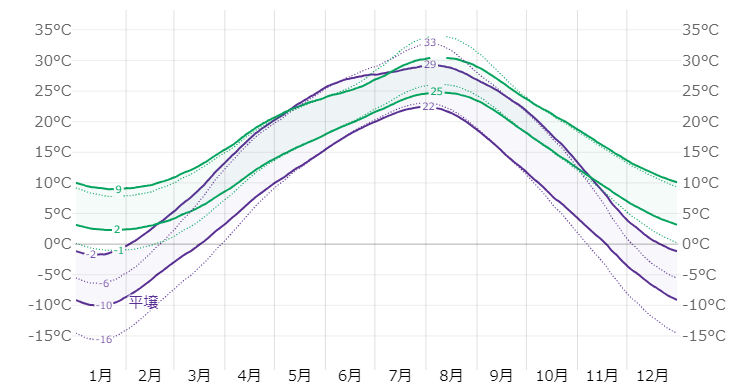
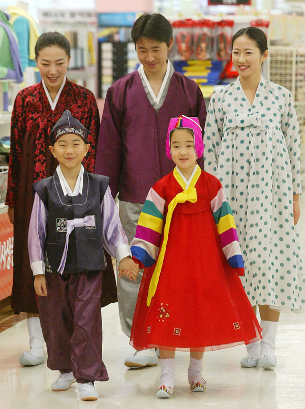
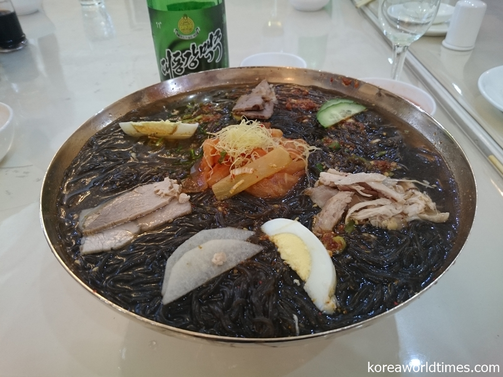
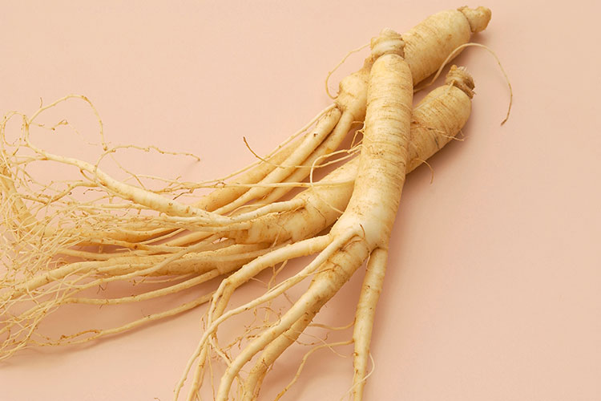
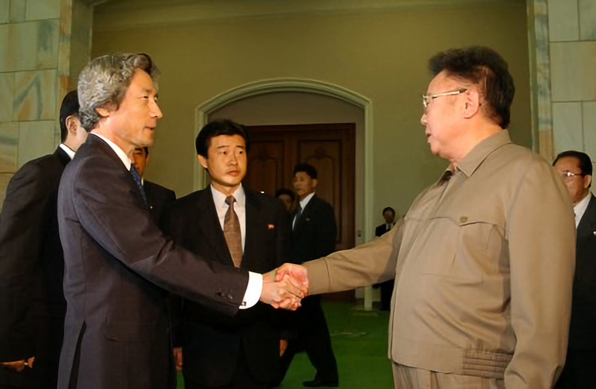

朝鮮民主主義人民共和国(北朝鮮)

１．位置や分布
北朝鮮は東アジアの朝鮮半島の北部にあり、南は韓国、北は中国とロシア、東西は海に挟まれた国です。
北緯38度から43度あたりに位置し、首都のピョンヤンは西側の黄海の近くにあります。

2.場所
北朝鮮の気候は夏は短いものの比較的暖かく湿度も高い気候で、 逆に冬は長く凍えるような寒さとなりますが、湿度が低く晴天に恵まれる日が多くなります。

同一民族が住んでいる大韓民国の文化と共通するものが多い。公用語は朝鮮語。
衣装は朝鮮服、食べ物は平壌冷麺や朝鮮人参が有名である。
- 朝鮮服
- 平壌冷麺
- 朝鮮人参
3.人間と自然環境との相互依存関係
北朝鮮の自然環境は、高山、森林、農地、水源、海洋生態系を含めて多様なバイオームである。
ただし、近年は「環境破壊」「自然災害」「生態系崩壊」の状態にあると報告されている。
1990年代の経済危機の間、多く国民によって薪などのエネルギーに供用するために森林破壊が多く行われ、
土壌浸食、土壌枯渇、洪水の危険度が高まった。
- 平壌近郊の村の衛星画像。左が2015年4月に撮影されたもの、右が2019年4月に撮影されたもの。
植樹で緑が増えている
4.空間的相互依存作用
日朝関係
北朝鮮政府の工作員による日本からの日本人の拉致は、1977年から1983年までの6年間に発生した。
北朝鮮は長年にわたって拉致を否定したが、2002年には13人を認めた。日本に住む韓国人のウンヒは、
北朝鮮に誘拐され、スパイ活動の学校で日本人を教えた
。2002年と2004年に、小泉純一郎首相は平壌を2回訪問し、彼らの帰還を求めた。
北朝鮮は最終的に誘拐された13人のうち5人を返還し、残りの8人が死亡したと主張した。

 調べても出てこなっかったのでしてそうなNO POVERTYにしました。
調べても出てこなっかったのでしてそうなNO POVERTYにしました。